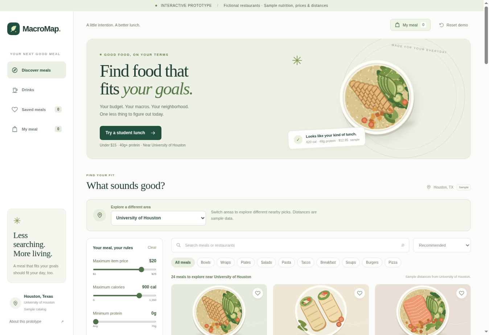
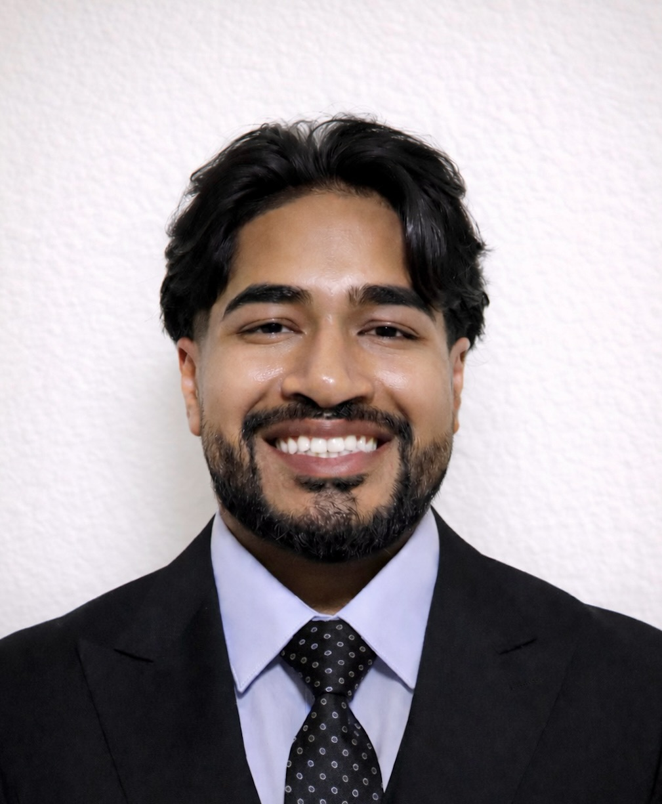

MacroMap
Making the everyday “what should I eat?” decision a little easier. A student meal discovery concept that connects nutrition goals, budget, and location.
HOUSTON, TEXAS / OPEN TO OPPORTUNITIES
Hey, I’m Mostaque Tahamid. I connect data, people, and ideas to solve business problems and move good work forward.
University of Houston business student.
Exploring the intersection of energy, technology, and operations.
Recovered through supplier
accountability at bp
Annual logistics savings
from corrective action
Trucking loads analyzed
to find a better way
Members in a student
community I helped build
01 / SELECTED WORK
A few examples of how I turn research, analysis, and collaboration into practical outcomes.

Making the everyday “what should I eat?” decision a little easier. A student meal discovery concept that connects nutrition goals, budget, and location.
Reviewed medevac cases, connected flight records to contract terms, and worked with suppliers to recover attributable costs.
Two years of trucking data became executive dashboards, more focused supplier conversations, and $142K in annual logistics savings.
Built the first SharePoint site for JSC Knowledge Management Week and improved the systems that help people find what they need.
ALSO ON MY DESK
02 / THE EXPERIENCE SO FAR
From the warehouse floor to energy innovation, each role has given me a new way to understand people and solve problems.
Showing all 9 experiences
Exploring how physical AI, engineering simulation, and emerging power technologies can create new growth opportunities.
Used contract analysis, logistics data, and supplier engagement to improve visibility and recover value in offshore energy procurement.
Built tools and knowledge systems that made information and IT support easier to access.
Worked across business growth, driver onboarding, and university collaboration.
Introduced students to DoorDash and DashPass for Students through campus outreach, events, and conversations.
Combined branch operations with customer service and sales in a fast moving rental business.
Led people and improved workflows in a large fulfillment operation.
Built a foundation in customer service, practical problem solving, and product education.
Gained early practical experience supporting quality control and equipment maintenance, building attention to detail and an appreciation for reliable operations.
03 / PEOPLE & COMMUNITY
The work I’m proud of also happens outside an internship. I enjoy creating spaces where people can learn, connect, and give back.
As a Co Founder and Vice President of UH’s first product management organization, I’ve helped grow a community of 500+ members around technology, design, and business.
I’ve mentored students, built an Excel budgeting and invoicing system, and helped secure partnerships with Amex, HPE, HP, and DoorDash.
JAN 2026 TO PRESENT
Selected for an 18 month professional development program, building analytical and leadership skills through business cases, coaching, and industry conferences.
APR 2024 TO JUL 2024
Raised $3,000+ with support from five local business sponsors. Coordinated outreach, volunteers, meals, supplies, and event logistics.
EARLY LEADERSHIP
Brought students together through inclusive cultural events and a multicultural dance show that raised over $3,000 for charity.
Houston Food Bank food sorting and packing. Local homeless shelter volunteering. Small acts of service with a practical purpose.
ABSA and MISSO member at UH. Earlier involvement in Kerr Fitness Club as a trainer, Student Council, and Varsity Chorale.
04 / A LITTLE ABOUT ME

Always a student.
In more ways than one.
Bangladesh → Houston
A different perspective.
The same drive to grow.
I moved from Bangladesh to the U.S. at 11. Being a first generation college student has shaped how I approach new opportunities: stay curious, work hard, and make the most of the people I learn from.
At the University of Houston, I’m building a business foundation while exploring where technology, energy, and operations meet. My experiences have taken me from helping a customer in a store aisle to improving a supplier conversation with better data.
Along the way, I discovered how much I enjoy sales and business development. I like understanding what someone needs, building a relationship, and finding a useful next step together.
Outside work, you’ll usually find me running, taking photos, trying something new in the kitchen, or spending time with my cat.
05 / THE FOUNDATION
A business education, a practical toolkit, and a habit of asking how things could work better.
C.T. BAUER COLLEGE OF BUSINESS
Bachelor of Business Administration
Supply Chain Management
Dean’s Distinguished List since August 2023
Academic Excellence Scholarship · UH Scholars
Excel · Power BI · SharePoint · PowerPoint · Microsoft 365 · Google Workspace · Adobe Creative Cloud
Data analysis · Process improvement · Project management · Customer discovery · Market research · Procurement · Business development
Systems Analysis & Design · Databases · Computer Applications · Strategic Supply Management
Training: Six Sigma at bp · Financial Services through Extern · AI Powered Customer Discovery Lab through Paragon One
Early academic projects included a National History Project and an Ocean Pollution Science Project. Photography and video projects continue to give me a creative outlet.
A GOOD CONVERSATION IS A GOOD START
I’m interested in opportunities across business development, technology sales, energy, and operations. I’d love to hear what you’re working on.